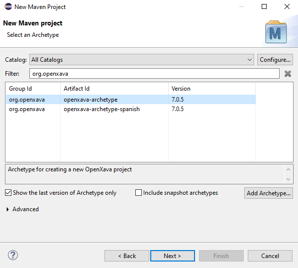
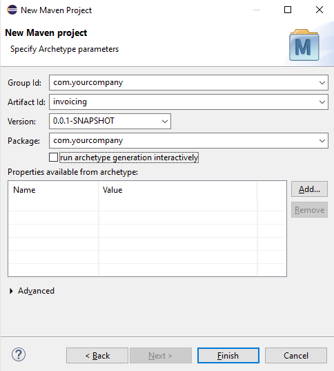
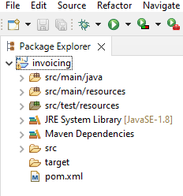
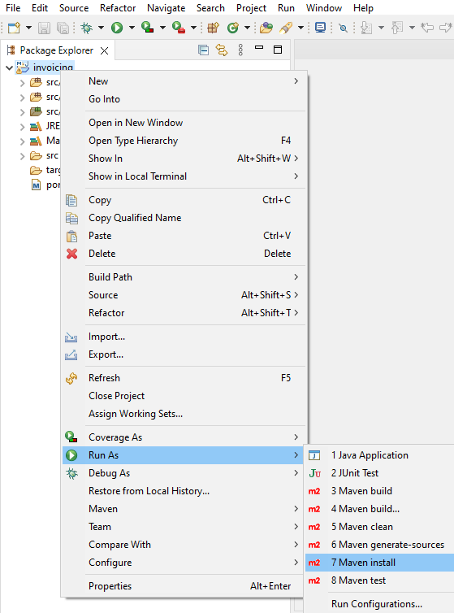
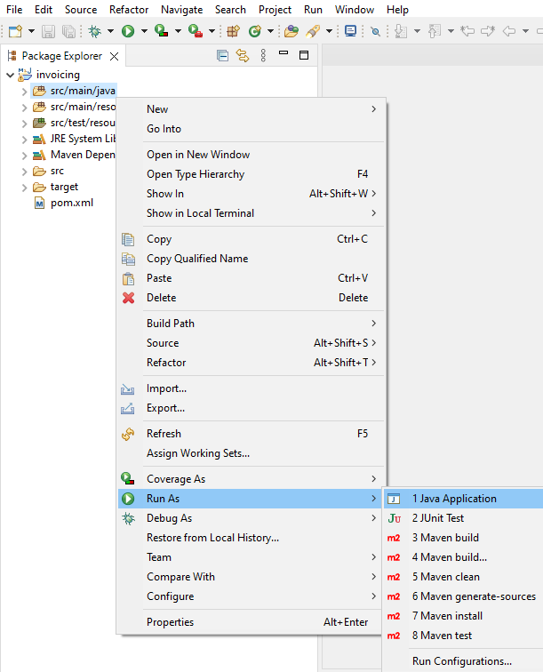

OpenXava includes OpenXava Studio,
so you don't need an additional IDE to work with OpenXava. OpenXava Studio
is based on Eclipse but is lighter and more beautiful. Moreover, you can
install any Eclipse plugin you need on top of OpenXava Studio and change
or customize the visual theme, to have a light theme, for example.
Anyways, if you prefer to work with your own Eclipse you can. Moreover, if
you use Eclipse IDE for Enterprise Java Developers, you can add a Tomcat
server in the
Servers tab and add your OpenXava applications to it
.
Install Lombok
OpenXava does not require Lombok, however we use it in the Getting Started
guide and the OpenXava course, so we recommend you install it.
Follow
the official doc to install Lombok into your Eclipse.
Create a new Maven project
There is a Maven archetype to create new OpenXava projects, therefore you
can create a new Maven project from Eclipse in a regular way. Open the
menu in Eclipse
File > New > Project… It shows the next
dialog, where you have to choose
Maven Project and click on
Next
button:

In
the next step just click on Next:

Now
it's the moment to choose the archetype, type org.openxava in
the filter to show only OpenXava archetypes, then choose openxava-archetype
and click on Next:

Finally,
you have to enter the name of your project, put it in the Artifact
id field, in lowercase. For Group id and Package
fields enter your company domain in reverse (if your works for Google it
would be com.google, for example). You have to remove the application
name from Package, because Eclipse adds it incorrectly.
Moreover, be sure that you uncheck the run archetype generation
interactively:

Press
Finish in the above dialog to get your project created.
Afterwards, you should have your new OpenXava project in your workspace,
thus:

Build your new project
Once created you have to build your project in order it works. To do it
choose the Run As > Maven install option over your project:

Now your project is ready to be executed.
Run your project
To run your project put the mouse on src/main/java folder inside
your project, click the right mouse button and choose Run As > Java
Application:

Your project is running now. You're ready to follow the getting started
guide: